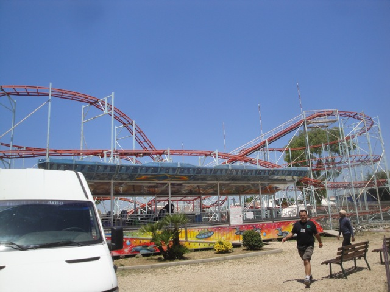

| |
Fantasialand Review
Fantasialand is unlike any other park I've been to. But knowing all the parks out there, it's got quite a few neighbors and cousins out there. Fantasialand is without a doubt, a ghetto park. When we got to the park, it was closed and we only got the credit (the only reason we were here) because of a bribe of 200 euros!! Oh, and did I mention that these people were carrying a gun? This is a park I'm sure most of you (unless you're a super whore) will never go to. Hell, there's no way I would've gone here if it wasn't for the fact that I was on a tour. I may be a credit whore, but I would not pay €200 for this. I can do so much more with that that it crosses the line of not worth it. Plus, I tend to stay away from people with guns (Sorry lunatics in Chipotle). I'm not sure what the operating hours for this park. But considering how it makes fairs look like Disney World in comparison, I still wouldn't recommend it. I'm just amazed that I'm writing a review for this place at all. Yes, I have written reviews of total credit whore stops. But at least those places are legit buisnesses that have a product for an audience much younger than us. This...this is just ghetto. Sorry fans of this park (if you exist).
Rollercoasters
There is a link to a review of all the Rollercoasters at Fantasialand.
Top Coasters
Montagne Russe Review

Flat Rides
I never rode any of the Flat Rides at Fantasiland. And from the looks of it, I didn't miss out on too much. They have a Ferris Wheel, and some crappy chairswings. Oh, and they at least used to have bumper cars. But I don't think that it's connected to any electricity, or able to run at all. I think it's pretty much dead. Not somethig you want to see in a park.
Water Rides
Fantasialand has no water rides.
Dining
I don't even think that Fantasialand serves food. The only food I saw in the park was a corn cob lying in the dirt. Mmm. Yummy. Eat up folks.
Foodies from around the world fly to Fantasialand for their incredible dining options.
Theming and Other Attractions
Here are the reviews of all the other stuff at Fantasiland. For theming, there's none as the park is literally just plopped down in the dirt. Though they do have some Disney characters laying around. And as for other stuff to do, there's literally nothing. There's not even rides here, let alone other stuff to do.
In Conclusion
Fantasiland may have at one point been an all right family park, but as far as I could tell, the park seems to barely be open with almost no rides at all. It's overshadowed by Zoomarine down the street, which is clearly much better in every way possible. This is the kind of park you constantly see in Third World Countries that just seems to exist, but not operate, and you have to bribe people to get the stuff open. I've heard stories about people doing this in countries like the United Arab Emerites, Vietnam, Georgia, etc. But I wasn't expecting this to be in Italy. So really, unless you're a complete and super whore, I would just skip Fantasialand all together. It's just a Galaxi, you can use those euros in much better ways, and I'm guessing it's on a limited lifespan anyways.
Enthusiast FAQs.
*Are there kiddy coaster restrictions? - I'm sure they'll let you on the Wacky Worm (They have one and I didn't ride it) if you bribe them enough.

Tips
*Be prepared to haggle.
*Don't expect to get the credit here.
*Don't get shot.
Theme Park Category:
Ghetto Park
Location
Torvaianica, Lazio, Italy
Last Day Visited
June 17, 2012
Video
There will NEVER be a Fantasiland Video.
Complete Update List
2012
TPR's Mega Europe Trip
This park is so ghetto that they don't even have their own website.
Home
|